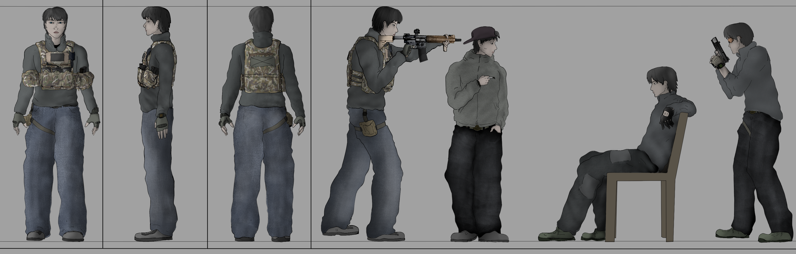

02 / SELECTED WORK
PROJECT 01
DIALOGUE ANIMATIC
During the making of this dialogue sequence, I made one major revision to improve the pacing and structure of the scene.
The main revision was about shortening the sequence. I cut small silent movements and moments that were not necessary, keeping the beginning, development, and ending of the scene clear. I also wanted the sequence to end in a more cinematic way, so I built the final shots around that idea.
The sequence was built using Storyboarder, Blender, and Clip Studio Paint. I focused on staging the dialogue, character reactions, timing, and the way the scene develops from beginning to end.
PROJECT 02
ACTION ANIMATIC (FULL)
I built the environments using simplified 3D references and adapted them into storyboard backgrounds. The main focus was on camera placement, character movement, and keeping the action easy to follow.
The production took around one month and went through several revisions. I made two major revisions to the fight scene, as well as a change to the meeting between the NPC girl and the agent in the club.
In the earlier version of the club scene, the drunk girl interrupted the agent while he was trying to follow the target. I changed this because I wanted to keep the quieter mood and rhythm of the chase before moving into the fight.
I decided to keep the animatic silent rather than use dialogue, sound effects, or music that did not fit the scene. This kept the focus on the visual pacing, camera movement, staging, and action.
The project was developed and edited using Storyboarder, Clip Studio Paint, and DaVinci Resolve.
PROJECT 03
CHASING SEQUENCE
STORYBOARD / ANIMATIC
The first split segment of the action animatic, focusing on the pursuit through the environment. I developed the sequence around fast movement, spatial geography, and tracking shots while keeping the route and screen direction clear.
PROJECT 04
FIGHT SEQUENCE
STORYBOARD / ANIMATIC
The hand-to-hand combat segment following the chase, focusing on impact, clear choreography, and close-quarters action. I built the shots around clear movement, hit beats, and the positions of the characters during the fight.
PROJECT 05
FIREARM & FINALE
STORYBOARD / ANIMATIC
The final section of the action sequence, moving from the physical fight into a firearm confrontation and final resolution. I focused on building tension toward the climax, controlling the final timing, and making the transition into the ending clear.
PROJECT 06
SILENT STORYBOARD
A 14-page silent sequence focused on visual cause-and-effect, camera staging, rhythm, and readable storytelling without dialogue.
For this storyboard, I used my own home as a 3D reference. I photographed both the interior and exterior with my phone, choosing different views for each scene. I then simplified the photos and used them as backgrounds for the sequence.
Because the story had no dialogue, I focused on communicating information through movement, character actions, staging, and the relationship between shots.
The original version of the story was much longer, so I made a major revision to keep the silent drama focused and prevent the sequence from becoming unnecessarily long.
This was the most intensive storyboard project I had worked on at the time. I spent a lot of time refining the shots, camera angles, staging, and continuity. It had a big impact on how I approach storyboarding now.


PROJECT 07
KISS N DESTROY
A completed grayscale manga project that demonstrates sustained pacing, visual continuity, and long-form sequential storytelling.
I worked actively on Kiss N Destroy for two years. During that time, I also made a complete remake of the manga, redrawing and rebuilding every chapter and page from the beginning.
After working on the first version for a year, I felt that the storytelling and visuals were not at the level I wanted yet. I spent another year rebuilding the entire manga with a more cinematic approach, stronger visual storytelling, and cleaner page design before completing the final version.
Kiss N Destroy is not my first manga project. Before this, I worked on a much larger project that is over 600 pages long. Since it was drawn entirely by hand on paper, I decided not to include it in my portfolio.
The Kiss N Destroy universe also has its own dedicated lore archive covering the world, characters, history, factions, and major events in detail.
The full lore archive is available here: Kiss N Destroy — Lore Archive
The full Kiss N Destroy manga is available here: Webtoon


PROJECT 08
CHARACTER SHEET
Character design and pose studies developed alongside my storyboard work, focusing on character proportions, expressions, and readable poses for cinematic scenes.
